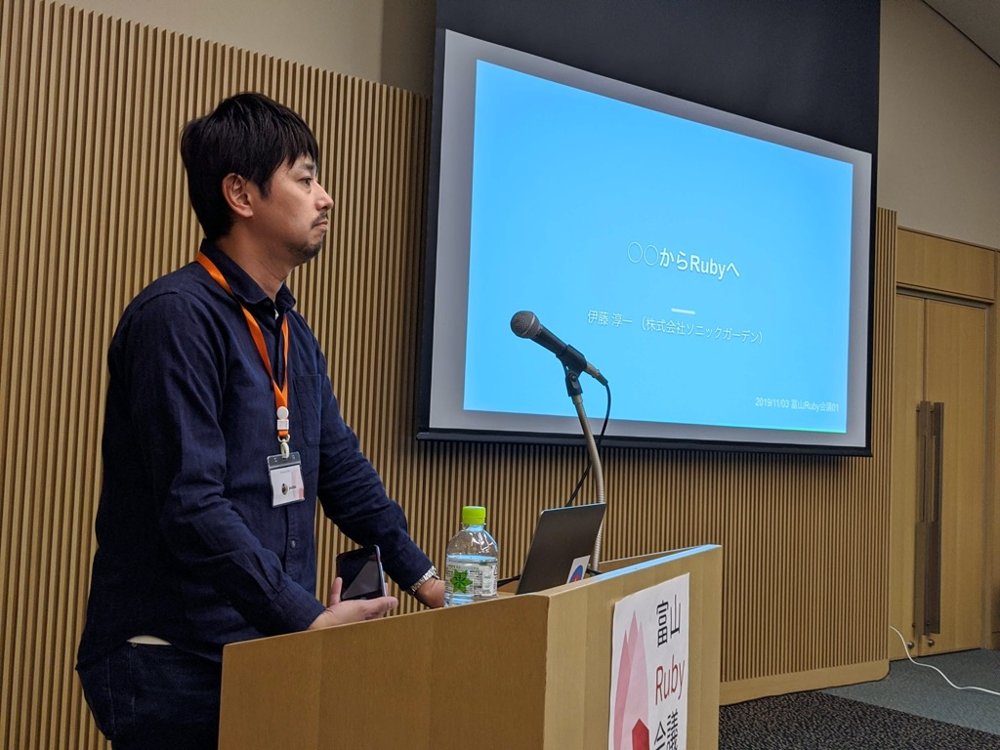
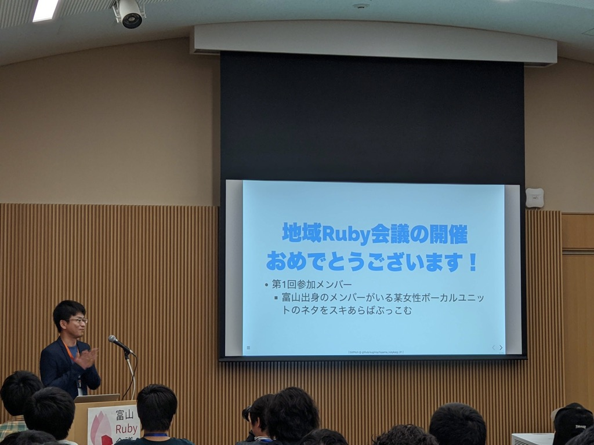
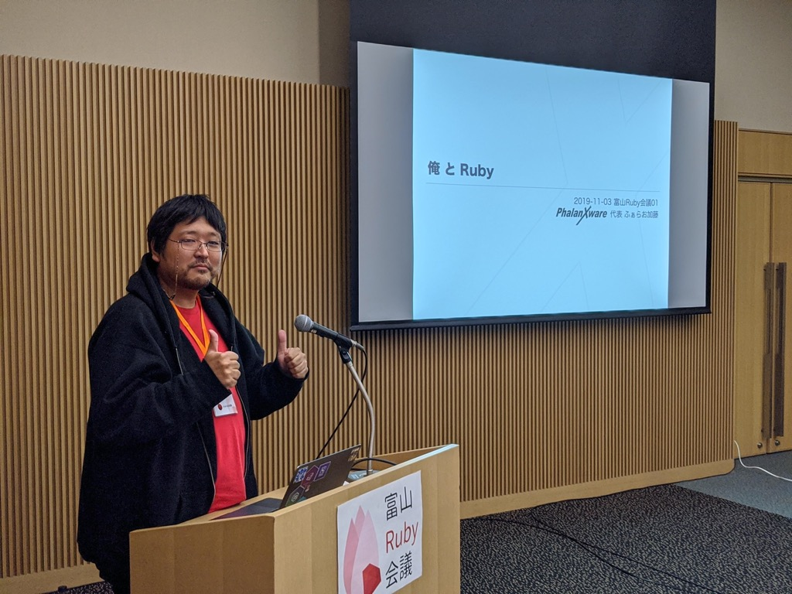
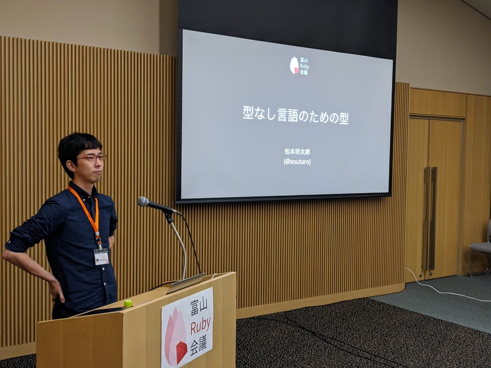

RegionalRubyKaigi レポート (78) 富山Ruby会議01 レポート
初稿：2020-02-02
はじめに
北陸初のRegionalRubyKaigiである富山Ruby会議01が、2019年11月に開催されました。
本記事はその開催レポートです。
なお登壇者名の表記は公式サイトに則っています。
開催概要
テーマ
Rubyと富山を楽しみ知ってもらう
開催日
2019-11-03 (日) 11:00 - 18:00
会場
富山国際会議場
主催
Toyama.rb
参加者
およそ80名
公式サイト
https://toyamarb.github.io/toyama-rubykaigi01/
公式タグ
ツイートまとめ
オープニング

まずは、主催者の @kunitoo のオープニングトーク。
登録時アンケートの結果発表。
富山県の人が約半数、約25%がその他北陸ということで、北陸で開催した意義があったと思います。

講演
招待講演「○○からRubyへ」
- 発表者：伊藤 淳一
- 資料

型がない（語弊あり）言語でも、ある言語でも、結局は動作確認するし、テスト・レビューするよね。そんなに変わらなくね？とのこと。
たしかに、ある程度チームのスキルレベルが高ければ確かにと思う反面、それが不安定な状況では、型の安心感はあるなーと思います。
そのためにスキルアップし、良いコードを書いていく必要があるよね。ということで、”良い”の一つである”読みやすいコード”の話（次のセッション）に続く。
他にも、経験者が語るRubyの利点などが多く、今後言語比較をしたい場面で見返したら良さそうなスライドでした。
質疑応答で、「Rubyで好きなメソッドは？」と聞かれて map を出していたのが、まさか伏線になるとは思ってませんでした。
「読みやすいコードとRubyらしいコード」
- 発表者：黒曜
- 資料

前半は、個人的にもいつも気にしている、”読みやすいコード”について、リーダブルコードからエッセンスを抽出した感じ。
後半には、そこに”Rubyらしい”を付け加え、Rubyにおける”読みやすいコード”についての考察。
名前の付け方や処理の書き方など、自分でも気をつけつつ、教育もできるようになっていかないとなーと思いました。
「初心者PHPerがRubyキメて思うこと」
- 発表者：oratake
- 資料

初心者に近い視点から、どのようにしてWeb系企業を目指し、学習していったかというお話。
個人的には、だいぶ昔に通った道だなぁ、という感じがありましたが、今ではRailsチュートリアルが整備されていたり、各種いろんな動画教材があったりと、便利な時代になりましたね。
ただ、情報がありすぎて、その取捨選択するスキル・良い情報にたどり着くためのスキル、などが必要になるのかなーと。
そのために、コミュニティに参加するのは良いですね。
「Crawler on Rails」
- 発表者：suginoy
- 資料

お昼を挟んでクローラーを作るお話。
サーバと逆の動作だからRailsを使えるのでは？って発想が面白かったし、実際に意外と使える部品が多いのも面白かったです。
個人での開発は時間がかなり限られるので、それに合わせた選択が必要だよなーというのは共感しました。
gzip周りの話で、「ある日、うまく動いてない」というケースもあったそうです。
普通のアプリケーションでも外部サービスに依存してることは多く、外部サービス側の動作が想定外だったり、急に変わったりするのはあり得る話だと思います。
なので、どこまで厳密にチェックすべきか？というのは、その場面ごとに考えないといけないよなーと思いました。
「TracePointから学ぶRubyVM」
- 発表者：joker1007
- 資料

ガチ枠。
写真撮りながらというのもあったけど、おそらく半分も理解できてない気がします。
（そもそも、TracePointとは？ってのが、いまいち理解できてない気がする。。。）
わからないなりに、「プログラムもプログラムで動いている」ということが改めて実感できた気がします。
また、これだけ強い人でもコードから変数名の意味は推測するしかないということだったので、「コメントを書くこと」だったり「変数名を安易に略さないこと」だったりは大事だなーと思いました。
「北陸で Ruby なお仕事に携わるための3つの戦略」
- 発表者：清原 智和
- 資料

エモい話枠。
自分のやりたい仕事をやりたければ、いろいろ越境しないと難しいよね。特に地方だと顕著だよね。という話。
清原さん自身が実際に経験した話だったので、かなり納得感がありました。
とはいえ、自分にここまでできるのか？という気持ちも大きいので、自分なりの別の方法を考えていこうと思いました。
「業務で！Rubyを！キメる！」

ちょっとしたツール（ワンショットのツール）であれば、比較的自由に技術選定しやすく、やりたい技術を導入しやすいという話。
個人的には静的解析とかにも興味があり、RuboCopの話に興味があったけど、想定外の使い方で面白かったです。
ASTって、ちゃんと見たことなかったんですが、説明を聞いているとなんとなーく読めそうな気はしてきました。
「mrubyでハローワールド！」

mrubyの話。
mrubyとかmruby/cが別ということは知っていたけど、ROMやRAMの使用量も違っているとのこと。
その分制約も違うので、使う場所にあわせて考える必要がありそう。
そこから、コンパイラを作る話になったけど、わかるようなわからんような。。。
ただ、順々に説明されることで、なんとなくの流れはわかったような気がしました。
LT
RSpec導入奮戦記
- 発表者：muryoimpl
- 資料

Rspecでのテストコードを、短期集中で増やしていく話。
テストを広めていくための方法や、その際に気をつけたことが紹介されていました。
自分もテストを書いて、広めていかないとなーと思っているので、参考になりました。
俺 と Ruby
- 発表者：ふぁらお加藤
- 資料

個人事業主として、なぜRubyを選択するのか？という話。
Rubyで仕事してる人は、”技術に誇りを持っている人”（意訳）が多い印象とのこと。
個人的には、Ruby書いている人たちは、そういう層と、”Railsでしか書けない層”に大きく二分されると思ってるので、そこだけ見分けられれば、いい感じの人と仕事できそうというのは納得。
元富山県民から見たRubyコミュニティ
- 発表者：相生ゆら
- 資料

富山弁枠。かつ初心者枠。
実務経験4ヶ月で、この規模の会場でLTしたのはいい経験だろうなーと思いました。
パーフェクトRuby読んで、アルゴリズムの問題をゲーム感覚で解き、Railsチュートリアルをサクサク進められるって、かなり優秀なのでは。。？と思いました。
Kanazawa.rbが生まれて7年が経ちました

地方勉強会の歴史の話など。
Kanazawa.rbは7年継続しているとのこと。すばらしい。
地方で”Ruby”で完全に縛ったコミュニティ・勉強会を開いてもつらいのは、全力で同意。（そもそも、自分もそんなにRubyを書かない）
最近行けてなかったのですが、Kanazawa.rbも久々に参加したくなりました。
Capybaraのしくみ
- 発表者：Yuka Kato
- 資料

Capybaraのかんたんなおさらいと、Capybaraの裏側の話。
BrowserとDriverにいろいろ種類があって、用途によって選ばないとなーと思いました。
PhantomJSがメンテ終了してたのは聞いたことあった気がしますが、それに引きづられる形でDriverも世代交代してる？
次に使うことがあったら、Apparitionはちょっと調べてみようと思いました。
RUBYでアッカーマン関数の計算をがんばる方法
- 発表者：水尻裕人
- 資料

アッカーマン関数って、聞いたことあるようなないような、、ぐらいでしたが、たしかに真面目に計算したら大変なことになりそう。
再起って、アプリケーション開発ではあんまり使うことがないけど、たまーにハマる場面があるので、覚えておいて損はなさそう。
最適化オプションつけてみたけどだめでした -> Ruby自体のコンパイル時に指定が必要だよ（うろ覚え）的なツッコミがすぐに入るあたり、すごく強い人達を呼べたんだなーと再認識しました。
RubyによるC言語コードのメトリクス測定
- 発表者：よしだ たけひこ
- 資料

組み込みエンジニアが、本業のすぐ隣の開発（調査）ツールとして、Rubyを使う話。
小さなプログラムをかんたんに動かせて、正規表現がさくっと使えて、外部のライブラリもかんたんに導入できるということで、ちょっとした調査ツールには確かに良さそうですね。
で、厳密なツールを作るのは難しいモノ・場面でも、妥協点を探り、人力の補助ツールとして作るのは良さそうですね。
mrubyでハローワールド

2度目の登場。
先程の発表で入ってなかった、Generate Codeの部分のライブコーディング？
vimでライブでバイナリ列を書いていくという荒業に出て、なんとなくやりたいことはわかったけど、途中のハプニングで完成できずに終了でした。
なんとなく、バイナリ列がどうなっているか？が、わかったような、わからんかったような。
招待講演「型なし言語のための型」
- 発表者：松本 宗太郎
- 資料

最後に今後のRubyの話。
Ruby3で型を入れようとしていることは知っていたけど、「パフォーマンスが目的ではない」というのは知らなかったです。
最初の招待講演の質疑応答で好きなメソッドとして挙げていた map が、最後の招待講演で邪魔者扱い（語弊）されていたのが面白かったですね。
型関連の歴史や、Union typesやflow-sensitive typingなどの”型なし言語のための型”として必要な要素など、順々にわかりやすく説明されたことで、かなり理解できた気がします。（奥はかなり深いんだとは思いますが。。）
TypeScriptが流行していることの異常さ？特異性？というのを、なんとなく理解できました。
型を書かなくて済んでいたJavaScript界隈で、これだけTypeScriptが流行っているのが面白いなと。
TypeScriptは、センスよく型を解決しているんだなーと感じました。
そして、型の導入としては後発となるRubyが、Rubyらしさを継続しつつ、上手く取り入れて便利になっていくんだろうな。と期待の持てる終わり方でした。
スポンサー
- 会場スポンサー
- 懇親会スポンサー
- スピーカースポンサー
- 招待講演スポンサー
まとめ
懇親会でも話に上がりましたが、発表の順番が絶妙だったと思います。
富山という土地柄、Ruby以外の言語で仕事をしている人が比較的多かったと思います。
そういった参加者に対して、
別言語からRubyに入った話・Rubyの良さの話
↓
Rubyらしいコードの話
↓
初心者がRubyに抱いた感想
という比較的初心者向けのセッションを午前中に聞いて、
Rubyでちょっと変わったアプリケーションを作る話
↓
RubyVMの話で深淵をちょっと見せて（＋RubyKaigiの凄さ）
↓
頭使ったところで、北陸（地方）特有のエモい話
↓
エモい話入れつつ、ちょっとASTの話
↓
mrubyをベースに、言語の作り方の話
↓
LTでちょっと閑話休題
↓
今後のRubyの型の話
といった流れで、緩急つけつつ、深淵も見せつつ、前の発表で得た知識がつながっていくという、素晴らしい流れでした。
開催1,2週間前には、参加者が少なくてアタフタしていましたが、当日にはほぼ満席となり、
終了後に回答いただいたアンケートも好印象な回答が多く、多くの人に楽しんでいただけたようで良かったです！
Toyama.rbについて
富山県とその周辺地域のRubyistのためのコミュニティです。 主催者は @mugi_uno です。
富山市内を中心に活動しています。
もくもく会をメインに活動しています。
もくもくと好きな作業をしつつ、参加者同士での交流を深めましょう！というのが目的です。
不定期にもくもく会以外のイベントをやったりもしています。
終了後には懇親会もあるよ！
基本的には毎月第２土曜日の日中の開催としています。 1ヶ月前には募集ページができるので、そこから申し込んでね！
参加に制約はありません、どなたでもウェルカムです。
- Ruby初心者でもOK
- というか主催者が初心者です
- 熟練者ももちろんOK
- もはやRubyじゃなくてもOK
- と言うかもうなんでもOK（読書します！とかでも大丈夫）
Toyama.rbをなぜ作ったのか？
そこにコミュニティがなかったからさ！
富山では決して多くないRuby案件。 でもRubyが好きでもいいよね！
著者について
石倉 昇 (@noboru_i) 富山Ruby会議01 写真係 兼 レポート係。
フルリモート会社員。